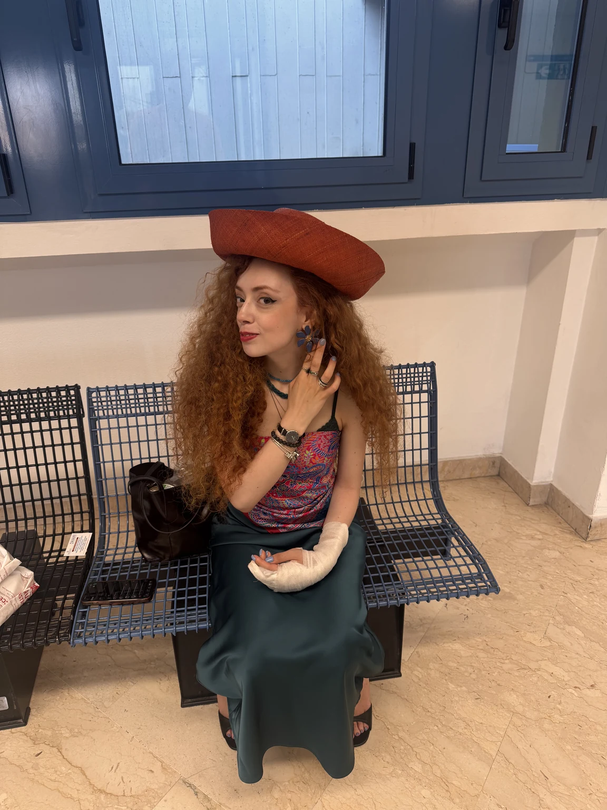
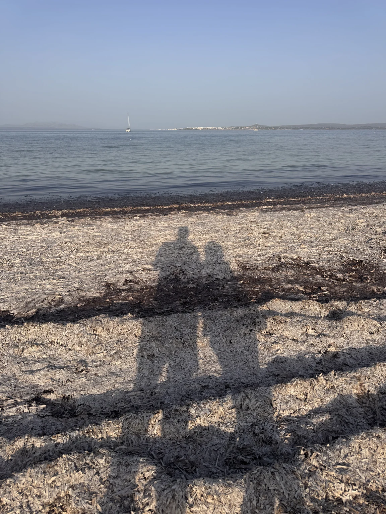
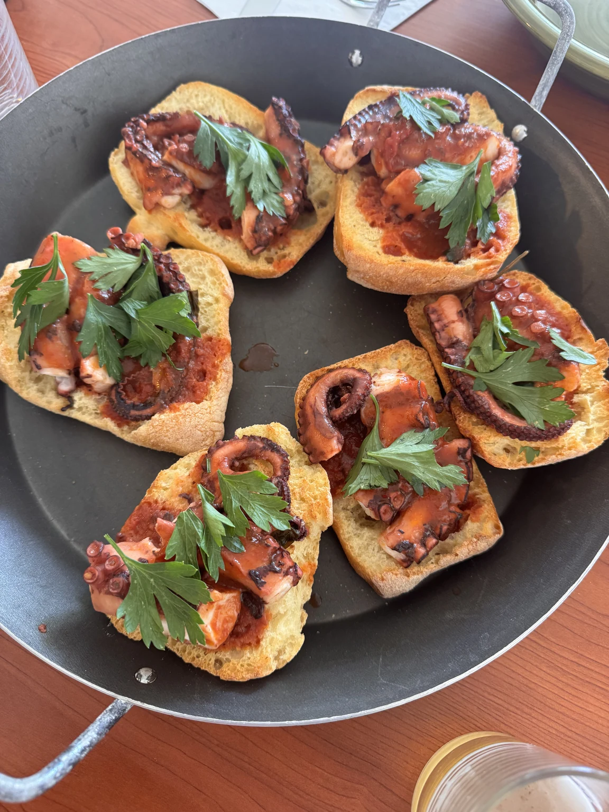
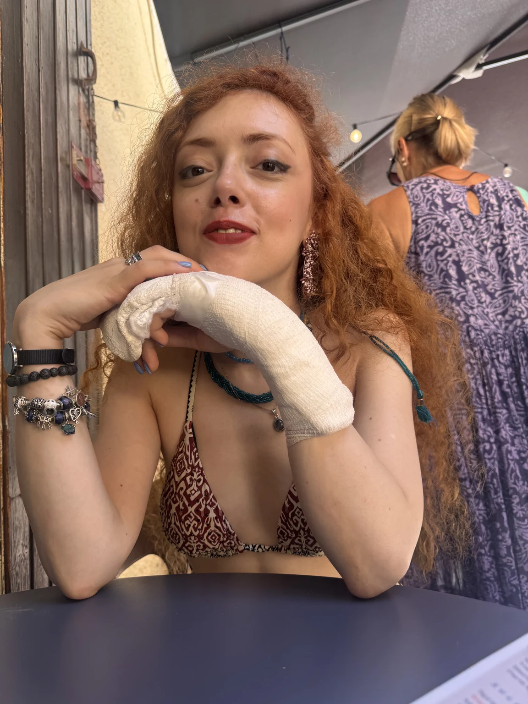
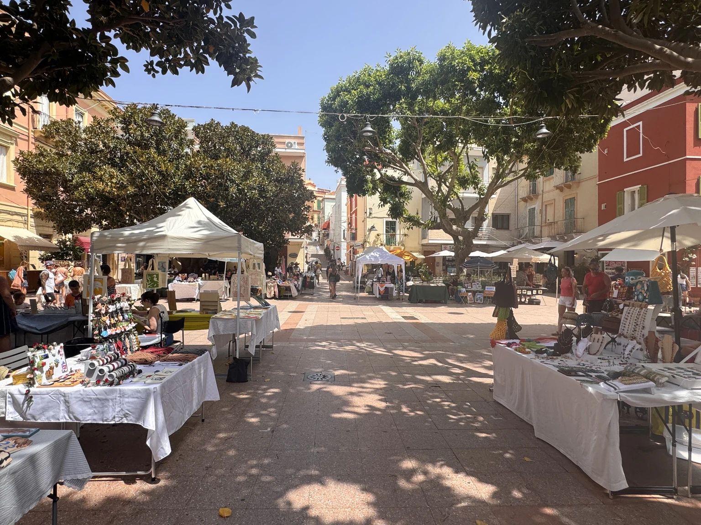
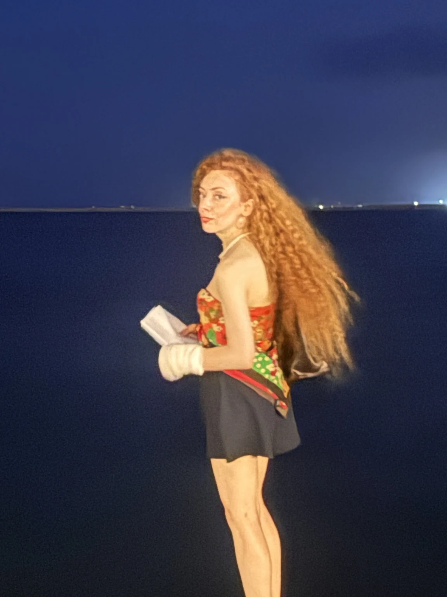
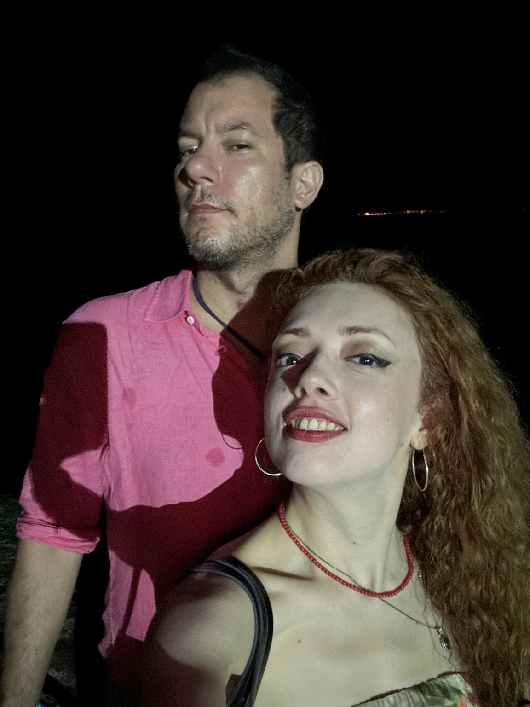
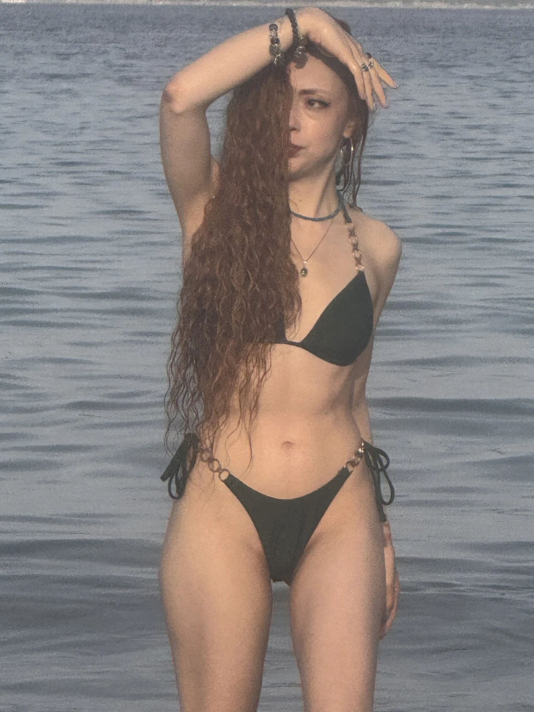
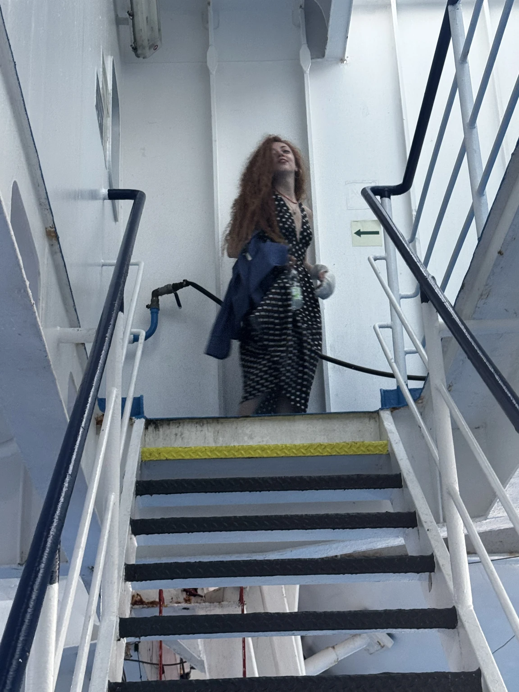

Un’isola davanti a un’isola: San Pietro, al largo della Sardegna sud-occidentale, con un paese che parla genovese e una spiaggia dove il sole sorge dal mare. Sette giorni con la casa a due passi dall’acqua.
A Carloforte l’orologio va a modo suo: si esce all’alba per la spiaggia, si torna a casa quando il sole picchia, si riesce di sera per il paese.
7giorni
1isola
10fotografie
3video
Mercoledì 15 luglio
L’arrivo da Cagliari
Si atterra a Cagliari, si attraversa il Sulcis fino a Portovesme e si prende il traghetto: quaranta minuti di mare e si è su un’altra isola.

Cagliari, in attesa
Come si arriva
Un’isola davanti a un’isola
L’isola di San Pietro sta al largo della costa sud-occidentale della Sardegna, di fronte a Sant’Antioco. Da Cagliari si guida per poco più di un’ora fino a Portovesme, poi il traghetto attraversa il braccio di mare e attracca nel porto di Carloforte, tra le case colorate. La prima fotografia è ancora sul continente sardo, a Cagliari, prima di partire: il cappello di Poli era già in modalità isola.
Giovedì 16 luglio · e ogni mattina
Il Giunco alle sei e mezza
La spiaggia sotto casa guarda a est: il sole esce dal mare dietro la Sardegna. Ci si va prima di tutti, quando la sabbia è ancora fresca.

Le nostre ombre, ore 19
La spiaggia
Spiaggia del Giunco
A un paio di chilometri a sud del paese, oltre il porticciolo e le saline: una lingua lunga di sabbia chiara e ghiaietta fine, con il fondale basso e i cespugli di giunco che le danno il nome. La fotografia in apertura è l’alba del 16 luglio, alle sei e mezza, con una barca ferma sull’acqua; questa sono le nostre ombre, la sera dopo, sulle alghe portate dal vento. Al Giunco il vento c’è quasi sempre, e con lui i windsurf.
Fisarmonica in cucina

Bruschette al polpo
Dove abbiamo dormito
La casa vicino al Giunco
Una casa in affitto a pochi passi dalla spiaggia, con una cucina grande dove si è passata buona parte delle giornate. Nel video Poli prova una fisarmonica; nella fotografia il pranzo della domenica, bruschette con il polpo, sul tavolo di casa.
Giovedì 16 e venerdì 17 luglio
Il paese che parla genovese
Carloforte è un paese ligure finito in Sardegna: facciate pastello, persiane verdi, carruggi e un dialetto, il tabarchino, che arriva da Pegli passando per la Tunisia.

Colazione in paese

Il mercatino in piazza
Carloforte
I tabarchini
Il paese fu fondato nel 1738 da Carlo Emanuele III di Savoia, che gli diede il nome, per accogliere una comunità di pescatori di corallo liguri: erano partiti da Pegli due secoli prima per l’isola tunisina di Tabarka, e da lì tornavano. Si portarono dietro la lingua, il pesto, la focaccia e il modo di colorare le case. Il mercatino sotto gli alberi della piazza è la versione estiva della vita di paese: si passa a mezzogiorno, si compra poco, si parla molto.
Un paese dove il pane si chiama come a Genova e il mare come in Sardegna.
Di giorno l’isola è bianca di luce. È la sera che Carloforte si accende: il lungomare, la piazza, la tonnara in fondo alla strada.
Venerdì 17 e sabato 18 luglio
Le sere sul mare
Il lungomare dopo cena, con il buio blu del porto, e il sabato la festa alla tonnara, nella punta nord dell’isola.

Il lungomare, ore 22

Alla tonnaraOmbre sul muro
Sabato sera
La festa alla tonnara
La tonnara di Carloforte sta a La Punta, l’estremità nord-orientale dell’isola: è una delle ultime del Mediterraneo dove la pesca del tonno rosso si fa ancora con le reti fisse, a maggio e giugno. D’estate i suoi spazi ospitano feste e concerti. Il video sono le ombre proiettate sul muro bianco dalle luci blu del palco, con Poli che alza le braccia in cima alla scala.
Il buio a Carloforte non è nero: è blu, con le luci di Sant’Antioco dall’altra parte dell’acqua.
Domenica 19 luglio · e il ritorno
La Bobba e il traghetto
L’ultimo bagno all’altro capo dell’isola, i fenicotteri a Cagliari e una notte in mare fino a Civitavecchia.

La Bobba, ore 19
Sud dell’isola
Spiaggia della Bobba
All’estremo sud di San Pietro, la Bobba è una baia sabbiosa chiusa dalla scogliera, vicina alle Colonne, i due faraglioni di trachite che sono il simbolo dell’isola (uno è crollato nel 2016). È esposta a sud, quindi al tramonto il sole resta a lungo sull’acqua: l’ultimo bagno del viaggio, alle sette di sera, con il mare fermo come un lago.
Un fenicottero, Cagliari
Prima di imbarcarsi
I fenicotteri di Molentargius
Tornati a Cagliari per il traghetto, una sosta allo stagno di Molentargius, il parco tra la città e il Poetto dove i fenicotteri rosa nidificano stabilmente dal 1993, a ridosso delle case. Nel video uno solo, in acqua bassa, che filtra il fango con il becco rovesciato senza badare a noi.

A bordo, ore 6
Il ritorno
Cagliari – Civitavecchia
Il traghetto notturno risale tutta la costa orientale della Sardegna e attraversa il Tirreno: si parte la sera, si dorme, e alle sei del mattino si è ancora in mare aperto, a metà strada. L’ultima fotografia è Poli sulle scale della nave, con il vestito lungo e la luce dell’alba dagli oblò.